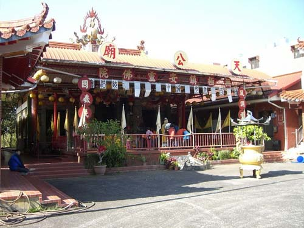

天公廟 位於愛蘭台地西側，是當地重要的信仰場所。 廟前格局獨具特色，青龍、白虎分立兩側， 中央則有「九龍戲水」景觀， 形成莊嚴而富有地方色彩的廟宇氣象。
大庭前方有一株樹齡約 60 年的 錫蘭橄欖巨木， 據說約於民國 40 年（1951 年）前後， 由現今寺廟管理人潘先生的母親 潘氏 親手種下。 經過數十年的生長，巨木主幹分成六股，枝幹盤結、姿態雄偉， 宛如 六條巨龍 盤繞柱間， 十分壯觀，也成為天公廟前一處具有地方故事與特色的老樹景觀。
這株老樹不僅見證天公廟周邊環境的變遷， 也承載著當地居民的生活記憶， 是愛蘭台地自然景觀與地方人文交織的特色之一。
老樹與廟宇相伴，靜靜守護著這片土地的信仰與記憶。
天公廟前的錫蘭橄欖巨木，是愛蘭台地最富傳奇色彩的自然地標之一。 潘氏當年親手種下這株樹苗時，或許未曾想到，六十餘年後它會長成 如巨龍盤繞般的磅礴姿態。六股主幹相互依偎，枝葉繁茂， 彷彿六條青龍護衛著廟宇，也護佑著這片土地上的子民。 每逢節慶，居民們在老樹下乘涼、敘舊、祈福， 人與樹的情感在歲月中逐漸沉澱，成為天公廟最溫暖的人文風景。 老樹依然挺立，一如這座廟宇百年來對地方的守護， 靜默而堅定。